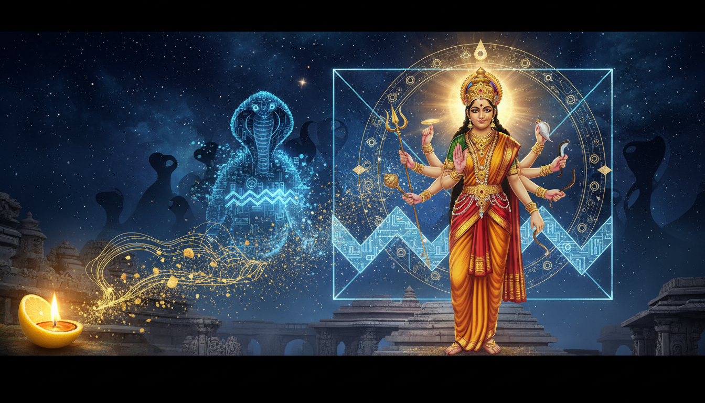

Introduction: The Archetypal Battle of Light and Shadow
In the sacred geometry of the heavens, Rahu is known as the "shadow planet"—the decapitated head of the Asura Svarbhanu. Representing our most intense obsessions, illusions, and the "smoke and mirrors" that cloud human judgment, Rahu’s energy is often chaotic. This Gochara (transit) into Kumbha (Aquarius) can manifest as mental restlessness and unrealistic ambitions.

To master this shadowy force, we look to the "Supreme Subduer": Goddess Durga. As the divine protector and destroyer of demonic forces, Durga possesses the specific authority to neutralize Rahu’s toxicity. This guide provides a practical framework for navigating the significant Rahu transit into Kumbha and the mysterious Shatabhisha Nakshatra (2025–2026) by invoking Durga’s clarity and strength. Through proper Upaya (remedies), we transform disruption into reinvention.
The Mythological Connection: Why Durga Controls Rahu
The authority of Goddess Durga over Rahu is rooted in her role as the subduer of the demonic energetic patterns Rahu embodies. Mythologically, Rahu originated from the severed head of the Asura Svarbhanu during the Samudra Manthan (churning of the ocean of milk), where he illicitly consumed the Amrita (nectar of immortality).
In other legends, such as the story of the demon king Jalandhara, Rahu acted as a messenger of greed, demanding that Lord Shiva surrender his consort, Parvati. In response, Shiva unleashed a terrifying burst of energy from his third eye, creating Kirtimukha—the "Face of Glory." Consumed by an insatiable hunger, Kirtimukha was ordered by Shiva to eat his own hands and feet until only his head remained. This total self-consumption symbolizes the devouring of the ego, and it is why Shiva stationed this "Face of Glory" as the guardian of temple thresholds.
Goddess Durga’s victories in the Devi Mahatmya correspond directly to Rahu-related afflictions. By defeating these forces, she provides the energetic template for overcoming material obsession and mental confusion.
| Demon | Rahu-Equivalent Signification | Durga’s Mode of Victory |
|---|---|---|
| Mahishasura (Buffalo Demon) | Stubborn material attachment | Direct martial victory |
| Shumbha (Pride Demon) | Ego inflation, ambition without limit | Multi-form battle |
| Nishumbha (Illusion Demon) | Deception, Maya, and false perception | Sword and shield combat |
| Raktabija (Regenerating Demon) | Obsessive thoughts that multiply | Drinking the blood (absorbing the multiplication) |
The 2025-2026 "Great Reset": Rahu in Kumbha and Shatabhisha
The journey through Kumbha represents a "Great Reset," shifting collective destiny through disruption and reinvention.
Timeline:
- Rahu in Kumbha: May 18, 2025 – December 5, 2026.
- Rahu in Shatabhisha Nakshatra: November 23, 2025 – August 2, 2026.
Shatabhisha is ruled by Rahu itself, making this Gochara exceptionally powerful. Its symbol is the empty circle or void. This void is not a vacancy but a space for profound self-reflection, teaching that true knowledge emerges from within. It is governed by Varuna, the god of cosmic waters and divine law.
The journey through Shatabhisha occurs in four distinct Navamsa phases:
- Phase 1: Healing & Restoration (Nov 23, 2025 – Jan 25, 2026)
Occurring in the Pisces Navamsa, this phase focuses on emotional recovery. With Jupiter exalted until December, divine grace supports acts of charity and service.
- Phase 2: The Eclipse Portal (Jan 25 – March 29, 2026)
Moving into the Kumbha Navamsa, Rahu is in its own sign and its own Nakshatra simultaneously. This creates a "Vimshottari Boost," where Rahu’s energy is at its most authentic and potent, triggering fated changes and rapid manifestation.
- Phase 3: Karma Tests (March 29 – May 31, 2026)
The Makara (Capricorn) Navamsa demands discipline. Saturn’s influence grows, testing your commitment to sustained effort over shortcuts.
- Phase 4: Spiritual Upliftment (May 31 – August 2, 2026)
The Sagittarius Navamsa opens doors to higher learning. With Jupiter re-entering Cancer in exaltation, this is the "wish fulfillment" phase where karmic seeds bear fruit.
Remedy Spotlight I: The Durga Saptashati Practice
The Durga Saptashati is a 700-verse hymn from the Markandeya Purana narrating the Goddess’s triumphs. For practitioners, this Upaya produces measurable improvement in 60-70% of natives experiencing significant Rahu effects.
Instructions for Recitation
The text is divided into three episodes or Charitas. To address Rahu specifically, one should focus on:
- Chapter 4: Part of the Madhyama Charita, focusing on the victory over Mahishasura to dissolve stubborn material obstacles.
- Chapter 8: Found in the Uttama Charita, detailing the defeat of Raktabija to stop the multiplication of obsessive thoughts.
Timeline of Benefits:
- 7–14 Days: Noticeable mental calming and reduced anxiety.
- 30–60 Days: Rahu-related obstacles and deceptive situations begin to clarify.
- 90 Days: Measurable positive shifts in career or relationship patterns.
"Sincere practice of the Saptashati is traditionally claimed to provide protection from hidden enemies, the removal of long-standing obstacles, and the attainment of mental clarity and wisdom."
Remedy Spotlight II: Rituals, Mantras, and Sacred Art
The Lemon Diya (Elumachai Vilakku)
This South Indian tradition is a powerful tool to "cool" the angry energy of Durga, channeling it into constructive outcomes.
- Preparation: Wash 2 small lemons. Cut them in half and squeeze the juice into a bowl.
- The Flip: Flip the lemon rinds inside out so the cup is formed by the interior peel.
- Lighting: Place a cotton wick in the center of each rind, fill with sesame oil, and light during Rahu Kaal. The fragrance of the lime oil acts as a healing mechanism.
- Offering: The extracted lemon juice must be diluted with water before being offered to a Neem tree to ensure the acidity does not harm the sacred tree.
Powerful Mantras
Chanting these during Rahu Kaal is highly effective:
- The Navarna Mantra: Om Aim Hreem Kleem Chamundaye Vichche (Invokes Devi Chamunda for protection and liberation).
- Rahu Pacification Mantra: Ardha-kāyam mahā-vīryam chandraditya-vimardanam simhika-garbha-sambhūtam tam rāhum praṇamāmy aham (I salute Rahu, born of Simhika, who has half a body and great power).
Vastu and Sacred Art
Keeping Durga Tanjore paintings in the home is a significant Upaya. These artworks use real gold foil, which radiates positive cosmic energy to counteract Rahu’s "shadowy" nature. Place these in the Northeast direction of your Pooja room, ensuring the Goddess faces East or North.
Tech and Tools: Modern Astrology in the AI Age
To accurately perform these rituals, you must know your specific placements. The AstroSage Kundli AI app is an essential tool for the modern practitioner:
- AI Kundli & Birth Charts: Identify your specific Rahu house placement and house lordship.
- Panchang: Track the daily Rahu Kaal periods to ensure your Lemon Diya and mantra practices are performed at the most effective times.
- Horoscope Matching: Use AI Horoscope features to understand how the 2025-2026 transit specifically interacts with your natal Moon and Sun.
The Internal Reset: Actionable Tips for Mental Clarity
Rahu often causes "mental smoke," particularly during Rahu-Moon periods. To navigate this, commit to an "internal reset."
Karmic Lessons for the Transit:
- Healing through Acceptance: Denial amplifies Rahu’s power. Acknowledge your truth within the "void" of Shatabhisha.
- Distinguishing Illusion from Intuition: Fear-based fantasies are Rahu’s playground; genuine intuition is Durga’s gift.
- Service as Purification: Shatabhisha is the "hundred healers." Helping others to heal their lives serves as a primary method for purifying your own karmic imbalances.
Conclusion: From Shadow to Strength
The Rahu Gochara of 2025-2026 is a phase of disruption followed by reinvention. While Rahu offers a "mirage of success," using the clarity of Goddess Durga allows you to transform that illusion into genuine fulfillment. By confronting the shadow with devotion, the "void" becomes a space for profound restoration.
Checklist for Success
- Verify Placements: Use AstroSage Kundli AI to check your Rahu house and Nakshatra.
- Mark Key Dates: The Gochara begins May 18, 2025; Shatabhisha starts November 23, 2025.
- Daily Practice: Recite Chapters 4 and 8 of the Durga Saptashati or chant the Navarna Mantra 108 times.
- Weekly Ritual: Perform the Lemon Diya ritual during Rahu Kaal, remembering to dilute the juice before the Neem tree offering.
- Maintain Ethics: Avoid shortcuts; use this transit for collective progress and service.
Sources
- Rahu Kumbha Ghata * Caput Draconis n Aquarius Aquila * BP ...
- Durga Saptashati for Rahu Problems: Practice Guide | AstroSight
- Fact Sheets-Rahu in Vedic Astrology – astrosutras.in
- Rahu In Aquarius Impact On Ai Jobs And Tech Developments - Staarvani
- Rahu in Aquarius: Growth, Obsession & Global Shift… | DKSCORE
- Rahu's Transit in Aquarius: A Karmic Revolution | PDF - Scribd
- Rahu: Co-Ruler of Aquarius Explained | PDF | Planets In Astrology - Scribd
- Rahu - Wikipedia
- Why Goddess Durga Is Powerful During Rahu Period - Ethnic Tanjore Arts
- Rahu in Aquarius – Astrological Insights - Indastro
- Rahu in Aquarius - Dr. Vinay Bajrangi
- Durga's Influence in Vedic Astrology | PDF - Scribd
- Rahu in Aquarius (May 18th 2025 - Dec 5th 2026): K… | DKSCORE
- Rahu and Durga connection : r/Nakshatras - Reddit
- Rahu in Aquarius for Men: Ambition, Relationships, Technology, and Life Purpose - Medium
- Rahu and Aquarius Ascendant: The Path to Recognition and Success
- Rahu Transit in Aquarius 2025: Predictions for Every Zodiac Sign - Hindustan Times
- Worship Goddess Durga and Lord Ganesha as remedy for Rahu and Ketu effects in life
- Shatabhisha Nakshatra: Healing & Transformation Guide - AstroSight
- 24 • Shatabhisha • Varuna : r/NakshatraPadaChandras - Reddit
- Rahu in Shatabhisha ~ Explore a mystical experience - align 27
- Rahu in Shatabhisha: The Great Reset – Healing Rev… | DKSCORE
- Rahu in Shatabhisha ~ A different healing experience - align 27
- RAHU in AQUARIUS (all 12 Rising signs) - YouTube
- are there any devi mantras that help during Rahu Mahadasha in fighting anxiety and depression? : r/Shaktism - Reddit
- Rahu & Ketu transit in Aquarius & Leo for all Ascendants 18 May 2025 till 5 Dec 2026
- Rahu the King Maker in Aquarius 2025-2026 - All Signs - Zoom Session With Vanita Lenka Ji - YouTube
- Kirtimukha: The Self Devouring Face that Guards the Sacred - Exotic India Art
- Kirtimukha: The Story of the Guardian of the Threshold - Arts of Architecture
- Who Was Kirtimukha? The Story of the Mythical Guardian Face - Gayatri Heritage
- Story of Kirtimukha - The Stone Studio
- gordon & woburn squares - kirtimukha
- Remedial Measures for planet Rahu as per Lal Kitab - Rudraksha Center
- Rahu Mahadasha Effects and Remedies - MyRatna
- Remedies of planet Rahu as per Vedic Astrology - Divine Rudraksha
- Lightning of lamp at Rahu Kaalam for Durga - IndiaStudyChannel
- Lemon diya – elumachai vilakku - Mildly Indian
- How to prepare Lemon lamps for Friday Pooja Lemon vilakku for positive & peaceful mind #shorts - YouTube
- Devi Bhagavata Purana - Vyasa Mahabharata
- The Srimad Devi Bhagavata Purana (In 2 Vol Set) - Motilal Banarsidass
- AI Astrology — Free AI Chat | Daily Horoscope & Detailed Report — Veadicastro
- AstroSage Kundli: AI Astrology - Apps on Google Play
- AI Astrology - Free Online Horoscope & AI-Powered Online Astrologer
- Has anyone tried using AI for astrology? How accurate was the prediction? : r/vedicastrology
- Rahu is in aquarius right now, sitting in his own nakshatra. if you're ...
- Devi Bhagavata Purana - Wikipedia
- All About Shrimad Devi Bhagavata (Durga) Purana - Jagatgururampalji.org